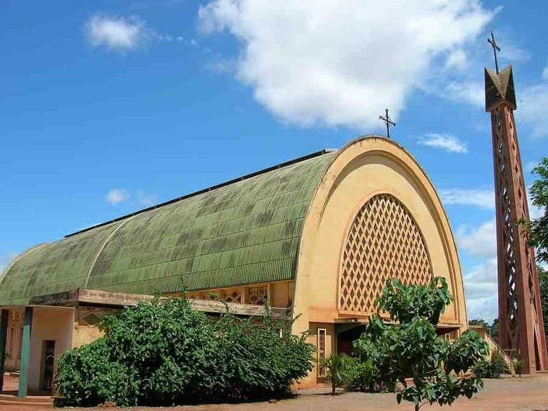

Site10
Cathédrale Notre-Dame de Lourdes
Historique
La Cathédrale Notre-Dame de Lourdes est un édifice religieux majeur situé à Bobo-Dioulasso, au Burkina Faso. Construite au début des années 1930, la cathédrale est un exemple emblématique de l'architecture religieuse chrétienne dans la région ouest-africaine.
La construction de la cathédrale a été initiée par les missionnaires catholiques français qui sont arrivés à Bobo-Dioulasso pour étendre leur mission d'évangélisation. Ils ont joué un rôle clé dans la planification et la réalisation de ce projet monumental, visant à établir un lieu de culte central pour la communauté chrétienne locale.
Inaugurée en 1934, la Cathédrale Notre-Dame de Lourdes est devenue un centre important pour les célébrations religieuses, les cérémonies communautaires et les événements ecclésiastiques. Au fil des décennies, elle a été le témoin de nombreux événements significatifs dans la vie religieuse et sociale de Bobo-Dioulasso.
La cathédrale a subi des rénovations et des restaurations pour préserver son intégrité architecturale et adapter les installations aux besoins modernes. Ces travaux ont permis de maintenir le bâtiment en excellent état et de renforcer sa fonction comme centre spirituel et culturel.
Description
La Cathédrale Notre-Dame de Lourdes est un exemple impressionnant de l'architecture néo-gothique, caractérisée par ses lignes élégantes, ses arches pointues et ses éléments décoratifs inspirés des églises européennes. Le bâtiment se distingue par sa structure en béton armé, qui a été choisie pour sa durabilité et sa capacité à supporter les conditions climatiques locales.
Architecture Extérieure
À l'extérieur, la cathédrale se présente avec une façade majestueuse ornée de détails sculptés et de motifs religieux. La façade principale est dominée par une grande rosace, qui laisse entrer la lumière naturelle et crée un effet visuel spectaculaire à l'intérieur. Les tours campanaires, élevées de chaque côté de la façade, ajoutent une touche imposante et servent de repères visuels dans le paysage urbain.
Les portes d'entrée, en bois sculpté, sont décorées de motifs religieux et de scènes bibliques, accueillant les visiteurs avec une impression de grandeur et de sérénité. Le toit en forme de flèche contribue à la silhouette distinctive de la cathédrale et souligne son caractère sacré.
Architecture Intérieure
À l'intérieur, la cathédrale est caractérisée par une grande nef centrale, bordée de colonnes élégantes qui soutiennent un plafond voûté. Les vitraux colorés, représentant des scènes de la vie de Jésus et des saints, créent une ambiance de lumière douce et mystique qui enrichit l'expérience spirituelle des fidèles.
L'autel principal est situé au centre de la nef, surélevé et entouré de sièges pour les prêtres et les membres du clergé. L'autel est décoré avec des sculptures et des ornements en bois, ajoutant une touche artistique et sacrée au lieu de culte.
Les chapelles latérales offrent des espaces plus intimes pour la prière et la méditation. Chacune de ces chapelles est décorée avec des statues et des tableaux représentant divers aspects de la foi chrétienne. Les bancs en bois, disposés en rangées ordonnées, permettent aux paroissiens de participer aux offices religieux dans un environnement paisible et respectueux.
Le Cloître et les Espaces Adjoints
Le cloître adjacent à la cathédrale est un espace calme et ombragé, offrant un lieu de repos et de réflexion pour les visiteurs et les membres de la communauté. Le cloître est souvent utilisé pour des activités communautaires, des réunions et des événements sociaux, renforçant le rôle de la cathédrale comme centre communautaire.
Des espaces annexes, tels que les bureaux paroissiaux et les salles de réunion, soutiennent les activités de la paroisse et les programmes éducatifs. Ces espaces sont conçus pour accueillir divers événements et services, contribuant à la fonction polyvalente de la cathédrale dans la vie communautaire.
Impact Culturel et Communautaire
La Cathédrale Notre-Dame de Lourdes joue un rôle central dans la vie religieuse et sociale de Bobo-Dioulasso. En tant que principale église catholique de la ville, elle accueille des services religieux réguliers, des mariages, des baptêmes, et des cérémonies funéraires.
Le bâtiment est également un lieu de rassemblement pour des événements communautaires et des fêtes religieuses, attirant des visiteurs de toute la région. La cathédrale est un symbole de l'engagement spirituel et culturel de la communauté chrétienne locale et un point de rencontre pour la célébration des valeurs et des traditions chrétiennes.
Le musée et les archives associés à la cathédrale conservent des documents historiques et des objets religieux précieux, contribuant à la recherche académique et à la documentation du patrimoine religieux de la région. La Cathédrale Notre-Dame de Lourdes continue d'être un phare de foi, de culture et de communauté, jouant un rôle important dans le tissu spirituel et social de Bobo-Dioulasso.